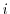

This command enumerates alignments between two blocks of sequences. More precisely, it enumerates the alignments between the segments in the first block and the sequences in the second block. The segments can be moved to the left and right as well as lengthened and shortened, relative to the initial alignment. The regions not in segments or not aligned with segments are left un-aligned, possibly to be modeled as insertions. Typically, the first block of sequences corresponds to structures, the segments to secondary structure elements in the first block, and the second block to the sequences one of which is to be modeled later on. The command is useful for generating many alignments which can then be used by another MODELLER script to generate and evaluate the corresponding 3D models.
All the sequences and segments are defined in the alignment array. The first block of sequences, the ones with segments, are the first align_block sequences. The regions corresponding to the segments are defined by the last entry in the alignment as contiguous blocks of non-gap residues. Any standard single character residue code may be used. The segments must be separated by gap residues, `-'. The remaining sequences from align_block + 1 to NSEQ are the second block of sequences. The alignment of the sequences within the two blocks does not change. A sample alignment file is
_aln.pos 10 20 30 40 50 60 7rsa KETAAAKFERQHMDSSTSAASSSNYCNQMMKSRNLTKDRCKPVNTFVHESLADVQAVCSQKNVAC-KN edn ---KPPQFTWAQWFETQHINMTSQQCTNAMQVINNYQRRCKNQNTFLLTTFANVVNVCGNPNMTCPSN templ --HHHHHHHHHHH-----------GGGGGGGGGGGGGGGGGGGGGGGGGGGGGGGGGGGGGGGGGGGG _consrvd * * * * * *** *** * * ** * * * _aln.p 70 80 90 100 110 120 130 7rsa -GQTNCYQSYSTMSITDCRETGSS--KYPNCAYKTTQANKHIIVACEGN---------PYVPVHFDAS edn KTRKNCHHSGSQVPLIHCNLTTPSPQNISNCRYAQTPANMFYIVACDNRDQRRDPPQYPVVPVHLDRI templ GGGGGGGGGGGGGGGGGGGGGGGGGGGGGGGGGGGGGGGGGGGGGGGGGGGGGGGGGGGGGGGGGGGG _consrvd ** * * * * * ** * * ** **** * **** * _aln.pos 7rsa V edn I templ G _consrvd
The enumeration of alignments explores all possible combinations of alignments between each segment and the 2nd block of sequences: The starting position of each segment  is varied relative to the input alignment in the interval from segment_shift[ ] to segment_shift[ ]. There has to be at least min_loop_length[ ] and min_loop_length[ ] residues that are not in any segment before and after the -th segment, respectively. The location of the N-terminus of segment is varied relative to the location in the input alignment in the interval from segment_growth_n[ ] to segment_growth_n[ ]. Similarly, the location of the C-terminus of segment is varied relative to the location in the input alignment in the interval from segment_growth_c[ ] to segment_growth_c[ ]. The shortening and lengthening of the segments may be useful in determining the best anchor regions for modeling of a loop.
Each alignment is scored according to the similarity scoring matrix specified by filename rr_file. This matrix may contain residue--gap scores, the gap being residue type 21; otherwise the value is set to the smallest value in the matrix. The score for an alignment is obtained by summing scores only over all alignment positions corresponding to the segments (no gap penalty is added for loops). When there is more than one sequence in any of the two blocks, the position score is an average of all pairwise comparisons between the two blocks of sequences. In the case where the number of positions in the alignment changes (i.e., the segments grow or shorten), the scores are not comparable to each other. It is feasible to enumerate on the order of different alignments in less than one hour of CPU time.
In general, two runs are required. In the first run, the alignments are scored and a histogram of the scores is written to file file. Then this file must be inspected to determine the cutoff segment_cutoff. In the second run, all the alignments with a score higher than segment_cutoff are written to files in the PIR format, using the standard file naming convention: root_namefile_id file_ext, where is the alignment file counter. In addition, the alignments are also written out in the PAP format for easier inspection by eye. Thus, segment_cutoff has to be set to a very large value in the first run, to avoid writing alignment files. During a run, a message is written to the log every segment_report alignments; this is useful for knowing what is going on during very long runs.
# Example for: alignment.segment_matching()
from modeller import *
log.level(1, 1, 1, 1, 0)
env = environ()
aln = alignment(env, file='ednf2.pap', align_codes=('7rsa', 'edn', 'templ'),
alignment_format='PAP', remove_gaps=True)
aln.segment_matching(file='segmatch.dat',
align_block=1, rr_file='$(LIB)/as1.sim.mat',
segment_shifts=(-8, 8, 0, 0),
segment_growth_n=(0, 0, 0, 0),
segment_growth_c=(0, 0, 0, 0),
min_loop_length=(0,2,0),
segment_report=1000000, segment_cutoff=0,
root_name='segmatch', file_ext='.ali', file_id='default')